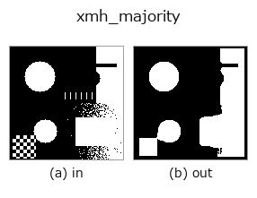

region-morphology op• Data kinds: region → region
• Call: fullseye.apply(img, "xmh_majority", a=0.5, b=0.5) (2-D model = एक image + दो scalar knobs a,b∈[0,1])

*Figure synthetic 128×128 input पर सच में चलाकर मिला output है। बाईं ओर input, दाईं ओर output। Point clouds ऊपर से देखे गए scatter के रूप में (brightness = z), 1-D series line के रूप में, volumes z दिशा में maximum-intensity projection के रूप में, videos बीच के frame के रूप में, complex images amplitude के रूप में, और जो return values चित्र नहीं बन सकते वे स्वयं values के रूप में दिखाए जाते हैं।*
Knob a को बदलकर (0.1 / 0.5 / 0.9, दूसरा knob default पर):
▸ xmh_majority: knob a को बदलने का figure (docs site)
*Knob b output नहीं बदलता (मापा गया: 0.1 / 0.5 / 0.9 पर एक जैसा)।*
Stages (पहले आने वाले ops → यह op, बाएँ से क्रम में):
▸ xmh_majority: stages का figure (docs site)
दूसरी images पर भी (synthetic scene / photo / coins। ऊपर की row में inputs, नीचे की row में उनके outputs। Knobs default पर):
▸ xmh_majority: दूसरी images पर output (docs site)
Majority filter (mahotas.majority_filter)। Binary region पर, square पड़ोस में 1 का बहुमत होने वाले pixels को ही 1 रखने वाली smoothing। अकेले noise हटाने और region की सीमा के दाँतेदार हिस्से चिकने करने में इस्तेमाल होता है।
a window size (2*int(1+a*4)+1 से 3-17 की विषम संख्या) को बदलता है। b उपयोग नहीं होता।
• gallery2d_region family guide
• Sample data catalog (DL URL / license) — 2-D के लिए skimage.data (BSD/public) + synthetic, 3-D के लिए real data sources (Stanford/PDS आदि) के DL URL।
• Operators का स्रोत और संदर्भ — इस op family के मूल research/methods के स्रोत।
• Algorithm का मानक स्रोत (लेखक, वर्ष) और उपयोग ऊपर की family usage guide में दिए गए हैं।
नीचे का program सच में चलता है, यह जाँचा गया है (figure वाला ही input)। Studio की help में यह block buttons बन जाता है, जिनसे इसे वहीं load करके चलाया जा सकता है।
threshold 0.50 0.50 xmh_majority 0.50 0.50
▸ यह pipeline load करें · Load करके चलाएँ
• find_ops_by_meaning — py -3.11 examples/find_ops_by_meaning.py
• gallery2d_region — py -3.11 examples/gallery2d_region.py
region को input के रूप में लेते हैं)identity · reg_erode · reg_dilate · reg_open · reg_close · fill_holes · select_largest · remove_small
region-morphology)—
*Provenance: ops.py — 2D operator registry. यह per-op note tools/opdocs.py md से अपने-आप generate होता है (हाथ से edit न करें)।*
© 2026 Kazufumi Furuse — Fullseye operator documentation. Licensed under Apache-2.0.